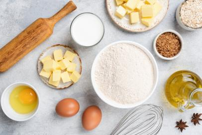

I got my ukulele about two year ago as a birthday gift from my brother and my mom. While I had grown up playing the piano, I was never very good and quit at a fairly young age but I always did love music; I later discovered that the ukulele was the perfect way for me to continue exploring my interests in instruments. I enjoy playing general pop songs or sountracks from my favorite movies on my ukulele. I will also occasionally play for my friends or with my brother while he plays his guitar. Ultimate Guitar is my personal favorite webiste to use when looking for the chords to a song.
Growing up, when I saw my mom in the kitchen, I always knew that I wanted to be like her which gave way to my love for food and baking. I personally prefer to bake as opposed to cooking because I have such a sweet tooth but making savory foods can also be fun. Some of my favorite baked goods I like to make are triple decker brownies, scones, cupcakes, and angel cake. While I am not as experimental in the kitchen as I would like to be, a couple recipes that I want to try and create in the future include macarons, homemade ice cream, and crepes. I also really enjoy watching culinary TV shows like Cupcake Wars, MasterChef, and Chopped. The competition element, drama, and of course amazing dishes are all quite fun to watch and some of the savory dishes even inspire me in the kitchen!

This summer due to the coronavirus pandemic, our family was unable to travel anywhere and instead had to stay at home. However, my dad and I, being active people decided to not let that deter us from enjoying our summer and instead started to hike together. Going around to the various parks in the area, we would hike for a couple hours enjoying the immersion in nature, the silence, and eventually started to go so frequently that we would find hidden spots off the trail with beautiful views and nature life. We also woke up early and got to see a couple of sunsets in different locations and they were all quite gorgeous. Although the start of the school year does limit the amount of time I have outdoors, I do wish to continue spending time in nature until it becomes too cold to do so.